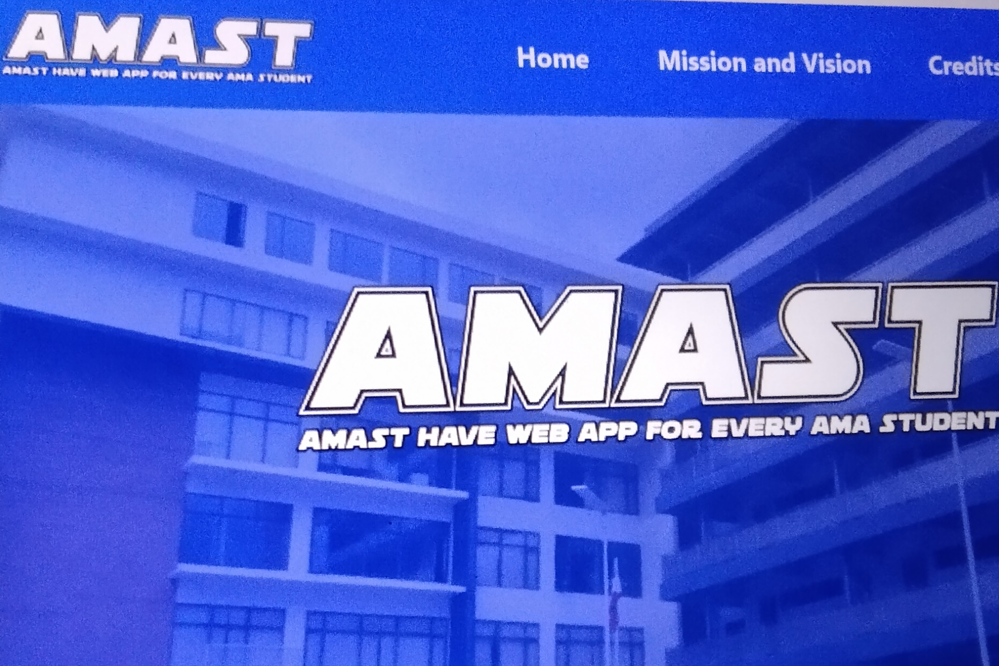

AMAST - AMAST have App for every student of AMA
A full-stack web app using Java with MySQL database, last year at AMA - ACLC College of Ormoc
View on GitHub →I am a 2nd year college student currently pursuing a Bachelor of Science in Information Technology (BSIT). Over the past two years, I have gained valuable experience in system development and project defense.
One of my most notable projects was AMAST, which means AMA Student Tracker, a system we've built using Java with my team and successfully defended it at ACLC College of Ormoc, in front of panelists from Tacloban, which strengthened my confidence in presenting technical work.
Due to financial considerations, I transferred to Palompon Institute of Technology, where I am continuing my 2nd year of study. Here, I am further honing my skills by collaborating and learning alongside experienced mentors and peers.
HTML5, CSS3, JavaScript, and some modern frameworks for creating responsive user interfaces.
Java and PHP (currently learning), and database management with MySQL.
A full-stack web app using Java with MySQL database, last year at AMA - ACLC College of Ormoc
View on GitHub →Just a simple calculator using PHP, currently honing my skills in a world of PHP.
View on GitHub →A simple Sign-In and Sign-out systems built with PHP and MySQL database.
View on GitHub →Currently working on it, a simple system made for students, student-leaders, and stakeholders to make their life easy in checking the attendance if there is an event.
View on GitHub →I'm always interested in new opportunities and exciting projects.